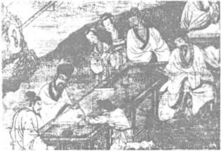

Đọc lịch sử Trung Hoa chúng ta nên nhớ điểm chính này: khi nhà Tần thống nhất giang san rồi, nhà Hán củng cố sự thống nhất đó và khuếch trương đất đai thành một đế quốc mênh mông, thì từ đó cho tới cuối đời Thanh trong hai ngàn năm, tất cả các triều đại sau chỉ lo đối phó với ba vấn đề:
1. Giữ được sự nội trị: thời thì theo chế độ địa phương phân quyền, như đời Hán, đời Đường, giao bớt quyền hành trung ương cho các thân thích hoặc các đại thần tận trung để cho họ gần như tự ý cai trị các địa phương ở xa (chế độ này tựa như chế độ chư hầu đời Chiến quốc), có thời thì trái lại, như đời Tống, đời Thanh, theo chế độ trung ương tập quyền, tước hết quyền hành, binh lực của các Thái Thú địa phương, kiểm soát họ chặt chẽ, để họ khỏi làm phản.
2. Phân phát đất đai lại cho dân cày (như chính sách cải cách điền địa của ta ngày nay) để cho đừng có sự cách biệt nhau quá giữa kẻ giàu và người nghèo, kẻ giàu khỏi có thế lực quá mạnh mà người nghèo khỏi điêu đứng tới cái nỗi không còn biết sợ chết nữa, “đành bỏ thí cái thân mà cha mẹ vợ con trông cậy vào, để làm đạo tặc” như Tô Tuân đã nói.
3. Chống đỡ ngoại xâm ở hai mặt: bắc và tây; vì đông là biển, họ khỏi phải lo cho tới khi tàu chiến của phương Tây ghé vào hải phận họ; còn về phía Nam các dân tộc như Việt Nam, Miến Điện, đất hẹp, người ít, chú trọng về nông nghiệp, ưa hòa bình, không làm cho họ phải bận tâm lắm, trái lại hễ lấn được là họ lấn; nhưng về phía Tây và phía Bắc, các dân tộc du mục, hung hãn, hiếu chiến, vẫn thường quấy nhiễu, uy hiếp họ mấy lần, chinh phục được họ nữa, làm cho họ mấy lần chỉ biết “lấy nước mắt mà rửa nhục!”
Sau nửa thế kỷ loạn lạc, phân tán đời Ngũ Đại (907- 960), Triệu Khuông Dẫn thống nhất được Trung Hoa, sợ cái họa phiên trấn đời Đường và dùng chính sách trung ương tập quyền, giảm binh quyền các trấn, đưa quan văn ra đó, kéo quan võ về trào, thành thử biên cương trống trải, các dân tộc Tây và Bắc dễ xâm lăng, binh cứu viện tới thì luôn luôn chậm trễ vì ở xa quá.
Thời đó ở đông bắc có nước Liêu, ở tây bắc có nước Tây Hạ, cả hai cùng cường thịnh, uy hiếp Tống, Tống phải lo phòng bị quanh năm.
Đời Tống, văn minh của Trung Hoa đạt tới một mức rất cao. Triết học vượt hẳn Hán và Đường: Thiệu Ung, Chu Đôn Di, Trương Tái, hai anh em Trình Di, Trình Hạo, Chu Hi dựng nên một nền Nho học cao siêu, chịu ít nhiều ảnh hưởng của Phật, Lão, tức Lý học; về văn học Tống thi cũng nổi danh như Đường thi, lại thêm từ[41] phát triển rất mạnh, thành một thể làm vẻ vang đời Tống, riêng cổ văn thì trong số bát đại gia, Tống đã chiếm được sáu nhà, chỉ nhường cho Đường có hai nhà là Hàn Dũ và Liễu Tôn Nguyên; môn họa của Trung Hoa, đời Tống cũng đạt tới mức cao nhất; rồi về kiến trúc, đồ sứ nữa, nhà Tống đều làm cho thế giới phải thán phục.
Nhưng về phương diện võ bị, đời Tống thật suy vi. Mấy ông vua đầu nhà Tống, (không kể Thái Tổ), như Thái Tôn (976-997), Chân Tôn (998-l022), Nhân Tôn (1023-l064), đều tương đối tốt, nhân từ, thương dân, lo việc nước, nhưng thiếu khí phách. Các quan lớn ở triều đình cũng vậy, nhiều vị văn hay, học rộng, nghiêm cẩn, trung thực như Phạm Trọng Yêm, Âu Dương Tu, Tư Mã Quang, nhưng hầu hết thiếu đảm lược hoặc tài kinh luân.
Vì vậy mà dân chúng cũng hóa nhút nhát và ta có thể nói rằng không khí sợ sệt các “rợ” lan tràn khắp nước. Ở trên chúng tôi đã dịch bài kí Trương ích Châu họa tượng của Lão Tô, ngoài lí do chính là bút pháp rất cao, còn một lí do phụ nữa là để độc giả thấy tinh thần khiếp nhược của vua, quan và dân chúng đời Tống.
Giặc Nùng (Nùng Trí Cao) quấy phá cả Việt Nam lẫn Trung Quốc. Ở Trung Quốc vào đời Tống Nhân Tôn, ở nước ta vào đời Lý Thái Tôn. Việt Nam coi họ chỉ như giặc cỏ, năm 1041, vua Lý Thái Tôn sai tướng dẹp được, bắt sống Trí Cao đem về Thăng Long rồi tha cho. Vậy mà triều đình Tống mới hay tin Trí Cao quấy rối đất Thục đã hoảng hốt: “kinh sư chấn động, dã vô cư nhân”, vua tôi ý kiến phân vân.
Nói gì tới giặc Liêu và Tây Hạ ở phương bắc. Vua Chân Tôn phải giảng hòa với Liêu, kết anh em với vua Liêu, tuy bề ngoài “Nam triều - tức Tống - làm anh, Bắc triều - tức Liêu - làm em”, nhưng sự thực “anh” phải nộp cho “em” mỗi năm hai mươi vạn tấm đũi và mười vạn lạng bạc, thì “em” mới chịu rút quân về.
Được thể Liêu mỗi năm một yêu sách, lúc thì đòi cắt đất lúc thì xin tăng tiền “đóng góp”, vì không nỡ gọi là tiền tuế cống.
Liêu lại còn xúi Tây Hạ quấy nhiễu Tống để Tống thêm điêu đứng. Rốt cuộc Tống cũng phải mỗi năm nộp tiền “đóng góp” cho cả Tây Hạ tuy nhẹ hơn.
Trên nửa thế kỷ vừa phải nuôi binh để chống cự, đề phòng hai dân tộc đó, vừa phải “đóng góp” cho họ, quốc khố của Tống khánh kiệt, dân chúng khốn đốn.
Nhà vua nghèo tới nỗi Nhân Tôn ở ngôi bốn mươi mốt năm, phải cần kiệm từng chút, một đêm đói, thèm món thịt dê mà phải nhịn, để “đỡ được một khoản tốn hao, mổ giết”; lại bỏ hẳn cái lệ “quân vương không mặc áo giặt bao giờ” mà ở trong cung chỉ thường bận áo vải, giặt đi giặt lại mãi cho đỡ tốn kém.
Có kẻ dâng hai mươi tám con hến bể, tính cả phí tổn chở chuyên thì mỗi con đáng giá một ngàn đồng tiền, ông lắc đầu:
“Gắp một con mà hao một ngàn đồng tiền, ta chẳng kham nổi”.
Thấy nguy cơ đó của quốc gia, hạng sĩ phu có trách nhiệm bóp trán tìm cách cứu vãn. Các cụ Chu (Đôn Di), Trình (Hạo, Di) cho rằng nguyên do chỉ tại phong khí sĩ phu thấp kém, nên ra sức nâng cao đạo học thánh hiền mà phát minh ra Lý học.
Một số khác, có óc thực tế hơn một chút, như Phạm Trọng Yêm (989-1052), hồi làm quan Tư giám dưới triều Nhân Tôn, tìm mọi cách rút bớt các tiêu pha, tiết kiệm ngân quĩ, thấy thuộc viên kẻ nào bất tài thì ngoặc một nét bút trên đầu tên họ để rồi bãi chức.
Một viên quan, Phú Bật, thấy vậy, trách ông là một nét bút mà làm cho cả một gia đình người ta phải phát khóc ông điềm nhiên đáp:
“Thà một gia đình khóc, chẳng hơn cả một nước phải khóc ư?” Rồi ông lại tiếp tục ngoặc nữa, ngoặc nữa.
Chính ông cũng rất đáng là bề tôi của vua Nhân Tôn: vợ con không được phép bận đồ tơ lụa, bữa cơm chỉ dọn một chút thịt, trừ khi có khách.
Nhưng nguy cơ lớn quá, phương pháp tiết kiệm đó không đủ để cứu vãn được, khác chi một gáo nước đổ lên bãi cát.
Chỉ có mỗi một người, Vương An Thạch là có sáng kiến và hùng tâm nghĩ tới việc biến pháp để cho quốc gia mau phú cường.
Họ Vương (l021-1086), tự là Giới Phủ, hiệu là Bán Sơn, quê ở Phủ Châu, làng Lâm Xuyên, nay thuộc tỉnh Giang Tây. Ông ta nhỏ hơn Tô Tuân 12 tuổi và lớn hơn Đông Pha 15 tuổi.
Con người đó thật thông minh, thật có tài mà cũng thật kì cục.
Thiếu thời đã nổi tiếng. Chỉ đọc sách qua một lần là nhớ, mà đọc rất nhiều sách, thông cả Bách gia chư tử và Phật, Lão, bạn học gọi là kho sách sống. Lại thêm du lịch nhiều, từng trải lắm.
Bạn nào thường đọc văn thơ Trung Hoa chắc còn nhớ giai thoại dưới đây. Đông Pha đọc thơ Vương An Thạch tới hai câu:
明 月 山 頭 叫
黄 犬 臥 花 心
Minh nguyệt sơn đầu khiếu,
Hoàng khuyển ngọa hoa tâm.
chê là vô lý; trăng sáng mà sao lại hót ở đầu núi, chó vàng sao lại ngủ trong lòng hoa được, bèn sửa chữ khiếu ra chữ chiếu, chữ tâm ra chữ âm[42] để thành nghĩa:
Minh nguyệt sơn đầu chiếu,
Hoàng khuyển ngọa hoa âm.
Trăng sáng chiếu ở đầu núi,
Chó vàng ngủ dưới bóng hoa.
Sau Đông Pha bị trích tới một miền phương Nam[43], thấy một loài chim gọi là minh nguyệt và một loài sâu gọi là hoàng khuyển mới nhận rằng mình đã sửa bậy, kiến thức của mình có chỗ kém Vương.
Một người bạn của Vương An Thạch là Tăng Củng đưa văn của ông cho Âu Dương Tu coi, Tu rất khen, lấy đậu tiến sĩ.
Vương cũng ở trong phái phục cổ như Âu Dương Tu, ghét lối tô chuốt cho kêu cho đẹp mà chú trọng nhất tới thực dụng, tới sự dùng văn để cứu đời, nên văn bình dị, mạnh mẽ, hàm súc, có nhiều ý mới, và cũng như Âu Dương Tu được hậu thế đặt vào hàng bát đại gia.
Trong cuốn này chúng tôi viết về họ Tô, nhưng cũng xin giới thiệu bút pháp của Vương An Thạch để độc giả hiểu nhân vật cực kỳ quan trọng đó.
Bài văn nổi tiếng nhất của ông, tuyển tập nào cũng trích, là bài Du Bao Thiền sơn kí (Đi chơi núi Bao Thiền).
遊 褒 禪 山 記
褒 禪 山 亦 謂 之 花 山. 唐 浮 圖 慧 褒 始 舍 菸 其 址, 而 卒 葬 之,
以 故 其 後 名 之 曰 褒 襌. 金 所 謂 慧 空 襌 院 者, 褒 之 蘆 冢 也.
距 其 院 東 五 里, 所 謂 花 山 洞 者, 以 其 乃 花 山 之
陽 名 也. 距 洞 百 餘 步, 有 碑 仆 道, 其 字 漫 滅, 獨 其
爲 文 猶 可 識, 曰 “花山”; 金 言 “花” 如 “花 寔” 之 “花” 者, 蓋 音 謬 也.
其 下 平 曠, 有 泉 側 出, 而 記 遊 者 甚 衆, 所 謂 前 洞 也.
由 山 以 上 五 六 里, 有 穴 窈 然, 入 之 甚 寒, 問 其 深,
刖 雖 好 遊 者 不 能 窮 也, 謂 之 後 洞.
予 與 四 人 擁 火 以 入, 入 之 愈 深,
其 進 愈 難, 而 其 見 愈 奇. 有 怠 而 欲 出 者 曰: “不 出,
火 且 盡”. 遂 與 之 俱 出. 蓋 予 所 至, 比 好 遊 者 尚 不 能 十 一;
然 珥 其 左 右, 來 而 記 之 者 已 少, 蓋 其 又 深,
則 箕 至 又 加 少 矣. 方 是 時, 予 之 力 尚 足 以 入, 火 尚 足以 明 也;
既 出 則 或 咎 其 欲 出 者, 而 予 亦 悔 其 隨 之 而 不 得 極 乎 遊 之 樂 也.
菸 是 予 有 歎 焉: 古 人 之 觀 菸 天 地, 山 川, 草 木, 蟲 魚,
鳥 獸, 往 往 有 得, 以 其 求 思 之 深 而 無 不 在 也. 夫 夷 以 近 則 遊 者 衆,
險 以 遠 則 至 者 少; 而 世 之 奇 偉 瑰 怪 非 常 之 觀 常 在 菸 險 遠,
而 人 之 所 罕 至 焉. 故 非 有 志 者 不 能 至 也; 有 志 矣,
不 隨以 止 也, 然 力 不 足者,
亦 不 能 至 也; 有 志 與 力 而 又不 隨 以 怠,
志 菸 幽 暗 昏 惑 而 無 勿 以 相 之,
亦 不 能 志 也. 然 力 足 以 至 焉, 菸 人 爲 可 磯 而 在 己 爲 有 悔.
盡 吾 志 也 而 不 能 至 者, 可 以 無 悔 矣,
其 孰 能 譏 之 乎? 此 予 之 所 得 也.
予 菸 仆 碑, 又有 悲 夫 古 書 之 不 存,
後 世 之 謬 其 傳 而 莫 能 名 者, 何 可 勝 道 也 哉! 此 所
以 學 者 不 可 以 不 深 思 而 慎 取 之 也 (…)
DU BAO THIỀN SƠN KÍ
Bao Thiền sơn diệc vị chi Hoa Sơn. Đường phù đồ Tuệ Bao thủy xá ư kì chỉ, nhi tốt táng chi, dĩ cố kì hậu danh chi viết Bao Thiền. Kim sở vị Tuệ không thiền viện giả, Bao chi lư trủng dã. Cự kì viện đông ngũ lí, sở vị Hoa Sơn động giả, dĩ kì nãi Hoa Sơn chi dương danh dã. Cự động bách dư bộ, hữu bi phó đạo, kì từ mạn diệt, độc kì vi văn do khả thức, viết “Hoa Sơn”; kim ngôn “Hoa” như “hoa thực” chi “hoa” giả, cái âm mậu dã.
Kì hạ bình khoáng, hữu tuyền trắc xuất, nhi kí du giả thậm chúng, sở vị tiền động đã. Do sơn dĩ thượng ngũ lục lí, hữu huyệt yểu nhiên, nhập chi thậm hàn, vấn kì thâm, tắc tuy hiếu du giả bất năng cùng dã, vị chi hậu động.
Dư dữ tứ nhân ủng hỏa dĩ nhập, nhập chi dũ thâm, kì tiến dũ nan, nhi kì tiến dũ kì. Hữu đãi nhi dục xuất giả viết: “Bất xuất, hỏa thả tận”. Toại dữ chi câu xuất. Cái dư sở chí tỉ hiếu du giả thượng bất năng thập nhất; thiên nhị kì tả hữu, lai nhi kí chi giả dĩ thiểu, cái kì hựu thâm, tắc ki chí hựu gia thiểu hĩ. Phương thị thời, dư chi lực thượng túc dĩ nhập, hỏa thượng túc dĩ mình dã; kí xuất tắc hoặc cữu kì dục xuất giả, nhi dư diệc hối kì tùy chi nhi bất đắc cực hồ du chi lạc dã.
U thị dư hữu thán yên: cổ nhân chi quan ư thiên địa, sơn xuyên, thảo mộc, trùng ngư, điểu thú, vãng vãng hữu đắc, dĩ kì cầu tư chi thâm nhi vô bất tại dã. Phù di dĩ cận tắc du giả chúng, hiểm dĩ viễn tắc chí giả thiểu; nhi thế chi kì vĩ khôi quái phi thường chi quan thường tại ư hiểm viễn, nhi nhân chi sở hãn chí yên. Cố phi hữu chí giả bất năng chí dã; hữu chí hĩ, bất tùy dĩ chỉ dã, nhiên lực bất túc giả, diệc bất năng chí dã; hữu chí dữ lực nhi hậu bất tùy dĩ đãi, chí ư u ám hôn hoặc nhi vô vật dĩ tướng chi, diệc bất năng chí dã. Nhiên lực túc dĩ chí yên, ư nhân vi khả ki nhi tại kỉ vi hữu hối. Tận ngô chí dã nhi bất năng chí giả, khả dĩ vô hối hĩ, kì thục năng ki chi hồ? Thử di chi sở đắc dã.
Dư ư phó bi, hựu hữu bi phù cổ thư chi bất tồn, hậu thế chi mậu kì truyền nhi mạc năng danh giả, hà khả thắng đạo dã tai! Thư sở dĩ học giả bất khả dĩ bất thâm tư nhi thận thủ chi dã (...).
Nghĩa:
BÀI KÍ: CHƠI NÚI BAO THIỀN
Bao Thiền Sơn cũng gọi là Hoa Sơn. Đời Đường nhà sư Tuệ Bao bắt đầu cất nhà ở đó, mất cũng chôn tại đó, cho nên sau mới gọi núi đó là Bao Thiền.[44] Ngày nay chỗ gọi là Vệ Không thiền viện, chính là nhà và ngôi mộ của Bao vậy.
(… ) Cách thiền viện độ năm dặm về phía đông, có cái động gọi là động Hoa Sơn vì động ở phía nam núi Hoa Sơn. Cách động trên trăm bước có tấm bia đổ bên vệ đường nét chữ đã mòn, mờ rồi chỉ còn có thể nhận được ý nghĩa mà biết rằng núi đó gọi là Hoa Sơn, chữ Hoa này; nay gọi là Hoa Sơn, chữ Hoa này, như trong tiếng “hoa thực” là do thanh âm mà lầm hoa nọ ra hoa kia.[45]
Phía dưới chỗ đó, đất bằng phẳng rộng rãi có suối ở bên chảy ra, mà những du khách ghi kỷ niệm ở đó rất đông tức là tiền động. Từ núi trở lên phía trên năm sáu dặm, có cái hang sâu thẳm, vô trong rất lạnh. Hỏi hang sâu bao nhiêu thì dù những kẻ thích đi chơi cũng không biết được đến đâu là cùng, chỗ đó gọi là hậu động.
Tôi cùng bốn người cầm đuốc vô coi, càng vô sâu thì càng khó đi mà cảnh tượng càng lạ lùng. Có người nản muốn quay ra, bảo: “không ra thì hết đuốc”. Thế là cùng nhau trở ra. Cái chỗ tôi đến so với cái chỗ những người thích du ngoạn đã đến, mười phần không được một, vậy mà nhìn ở hai bên, những người đến chơi ghi ở đó đã ít rồi, vậy thì càng vô sâu, số người tới được càng ít. Lúc đó sức tôi còn đủ để vô nữa, đuốc cũng còn đủ để soi đường, khi ra rồi có kẻ oán trách người đã nản lòng muốn ra, mà tôi cũng ân hận rằng đã theo họ, không được thỏa hết cái thú vui du lãm.
Vì vậy mà tôi có lời cảm khái: “Cổ nhân xem trời đất, núi sông, cây cỏ, cá sấu, chim muông, thường thường có chỗ sở đắc là vì chịu tìm tòi suy nghĩ kỹ mà lại không có chỗ nào là không tới. Chỗ phẳng mà gần thì kẻ đến chơi nhiều, chỗ hiểm mà xa thì người đến chơi ít. Mà những cảnh kì vĩ, lạ lùng, phi thường ở trong đời thì lại thường ở những chỗ hiểm mà xa người ta ít tới. Cho nên nếu không có chí thì không thể đến được, có chí đấy, không nghe lời người khác mà bỏ dở, nhưng nếu sức không đủ thì cũng không tới được, có chí lại có sức lại không nghe lời người ta mà hóa nản tới được chỗ tối tăm mù mờ nhưng không có vật giúp mình thì cũng không tới được. Sức đủ để tới mà không tới, ở người thì đáng chê cười, ở mình thì đáng ân hận. Gắng hết chí của mình mà không tới được thì mới không ân hận, mà còn ai chê cười ta nữa? Đó là chỗ sở đắc của tôi.
Về tấm bia đổ, tôi buồn rằng sách cổ không bảo tồn được đời sau cứ truyền lầm, mà không ai biết được các tên thực, như vậy thì làm sao mà nói rõ ra được.[46] Điều đó các học giả không thể không suy nghĩ kĩ mà tự lựa và đoan định cho cẩn thận (...)
Văn chẳng chút hoa mĩ, rất bình dị, mà cảm xúc triền miên, tư tưởng cô đọng, xác đáng, vạch được đủ những điều kiện để học hỏi: phải có chí, có khả năng, có bạn tốt, có phương tiện, nhất là phải có tinh thần nghi ngờ các truyền thuyết mà cố tra khảo tới tận nguồn. Bài đó viết từ thế kỉ XI mà các học giả ngày nay vẫn có thể coi là định luận.
Thơ ông tả tình, tả cảnh đều hay, lựa chữ rất kĩ, ý tưởng đôi khi đột ngột. Tình thì như bài Đưa Trường An Quân:
少 年 犛 别 憶 非 輕
老 去 相 逢 亦 愴 情
草 草 杯 盤 供 笑 語
昏 昏 燈 火 話 平 生
自 憐 湖 海 三 年 隔
又 作 塵 沙 萬 里 行
欲 問 後 期 何 日 是
寄 書 應 見 贗 南 征
Thiếu niên ly biệt ức phi khinh[47],
Lão khứ tương phùng diệc sảng tình.
Thảo thảo bôi bàn cung tiếu ngữ,
Hôn hôn đăng hỏa thoại bình sinh,
Tự lân hồ hải tam niên cách,
Hựu tác trần sa vạn lí hành.
Dục vấn hậu kì hà nhật thị?
Kí thư ưng kiến nhạn nam chinh.
Biệt ly tuổi trẻ nhớ không vừa.
Gặp gỡ tình già đã não chưa?
Mâm chén sơ sài ngồi đối mặt,
Ngọn đèn leo lét chuyện ngày xưa.
Ba năm hồ hải thương xa cách,
Muôn dặm hồng trần lại tiễn đưa.
Ướm hỏi bao giờ là hậu hội?
Về nam cánh nhạn sẽ đem thơ.
Đào Trinh Nhất dịch
Hai cặp thực và luận lời bình dị mà thành thực, cảm động.
Cảnh thì như bài tuyệt cú dưới đây[48]:
京 口 瓜 州 一 水 間
鍾 山 抵 隔 數 重 山
春 風 又 綠 江 南 岸
明 月 何 時 照 我 還
Kinh Khẩu, Qua Châu nhất thủy gian,
Chung San chỉ cách sổ trùng san.
Xuân phong hựu lục Giang Nam ngạn,
Minh nguyệt hà thời chiếu ngã hoàn?
Qua Châu, Kinh Khẩu một sông,
Chung Sơn cách núi mấy trùng trơ vơ.
Giang Nam xuân lại xanh bờ
Đường về nào biết bao giờ trăng soi.
Đào Trinh Nhất dịch
Vương đã sửa đi sửa lại cả chục lần mới tìm ra được chữ lục (là xanh) trong câu ba; mới đầu hạ chữ đáo (là đến), đổi ra chữ quá (là qua), chữ nhập (là vào), chữ mãn (là đầy), vân vân... Chữ lục vốn là tĩnh từ hoặc danh từ, ở đây ông dùng làm động từ (gió xuân làm xanh bờ GiangNam) nên hình ảnh nổi bật hẳn lên.
Đọc những văn thơ dẫn trên, ta chỉ biết ông có tinh thần một học giả, một nghệ sĩ giàu tình cảm, chứ không biết được rằng ông còn là một người say đắm lí tưởng, có chí lớn, bản lĩnh cao, coi thường thế tục, tự tin lạ lùng.
Suốt ngày ông đọc sách và suy tư, tìm cách cứu vãn quốc gia, không hề quan tâm tới đời sống hằng ngày, chẳng nghĩ tới sự ăn mặc, tắm rửa, lúc nào óc cũng như ở trên mây, đãng trí lạ lùng.
Sử chép rằng Vương An Thạch không bao giờ tự ý thay áo, không biết mình bận áo nào nữa. Một lần bạn bè rủ ông lại một nhà tắm tại một ngôi chùa (hay đền); trong khi ông tắm, họ lén lấy chiếc áo ông cởi ra mà đặt thay vào một chiếc áo mới. Tắm xong ông lấy chiếc áo mới bận, chẳng hề ngạc nhiên.
Một lần khác, có người bảo Vương phu nhân rằng ông rất thích ăn món thịt hoãng xé nhỏ. Bà vợ ngạc nhiên, hỏi lại:
- Sao các bác biết được. Nhà tôi có bao giờ chú ý tới thức ăn đâu.
Họ đáp:
- Vì trong bữa tiệc tôi thấy bác trai gắp hoài món đó tới sạch đĩa mà tuyệt nhiên không đụng tới các món khác.
- Đĩa thịt hoãng đó đặt ở đâu?
- Ngay trước mặt bác trai.
Bà vợ hiểu liền, bảo họ:
- Ngày mai các bác đặt một món khác ở trước mặt nhà tôi rồi sẽ biết.
Họ nghe lời, hôm sau đặt một món khác trước mặt ông, còn món thịt hoãng xé nhỏ thì đặt ở xa. Quả nhiên, Vương An Thạch chỉ gắp món ở trước mặt mà không biết rằng trên bàn còn món thịt hoãng nữa.
Lần khác, vua Nhân Tôn đãi tiệc các đại thần, ở bên một bờ hồ. Trước mặt mỗi vị đặt một cái đĩa bằng vàng đầy những viên nho nhỏ làm mồi cá để họ câu cá dưới hồ lên rồi nhúng vào nước sôi. Vương An Thạch đầu óc ở đâu đâu chẳng thèm câu cá cũng chẳng nhìn các người khác câu, cứ gắp các mồi đặt trong đĩa ở trước mặt mà đánh tì tì cho tới hết nhẵn.
Tay không lúc nào rời quyển sách. Hồi làm một chức quan nhỏ ở Dương Châu, đọc sách suốt đêm, tới gần sáng mới ngủ gục trên án thư được một lát, lúc bừng tỉnh dậy thì đã trễ giờ, vội vàng lại quan thư mà chẳng kịp rửa mặt, chải tóc. Thượng cấp là Hàn Kì (sau làm tể tướng) thấy vậy tưởng ông miệt mài tửu sắc, khuyên:
- Thầy còn trẻ tuổi, đừng bỏ phí quang âm mà nên chăm chỉ đọc sách đi.
Ông đứng im không đáp, phàn nàn với bạn rằng Hàn Kì không ưa mình. Sau, danh hiếu học của ông đã vang lừng rồi, Hàn mới nhận rằng mình đã xét lầm.
Một điều làm cho nhiều người lấy làm lạ nữa là đậu tiến sĩ sớm, hồi hai mươi mốt tuổi, làm quan sớm mà trong hai mươi lăm năm đầu, mặc dầu được Âu Dương Tu mấy lần tiến cử lên những chức cao ở triều đình ông từ chối hết, chỉ nhận những chức nhỏ ở tỉnh, mãi đến năm bốn mươi sáu tuổi mới lĩnh một chức vụ quan trọng.
Mà không phải là ông không có tài cai trị: ở các nhiệm sở ông đã tỏ ra có sáng kiến và đắc lực, xây đập, tổ chức lại học đường, thực hiện nhiều cải cách về xã hội, kinh tế, ông cố ý từ chối để cầu danh chăng? Vì càng từ chối, triều đình càng để ý tới ông: thời đó còn hơn mọi thời khác, bọn quan lại chỉ mong cầu cạnh được chỗ tốt, đê mạt nhất là Đặng Oản, kẻ đã trâng tráo bảo:
Hảo quan hoàn ngã vi chi[49].
Quan sang cứ việc ta làm,
Mặc ai cười mắng đến nhàm thì thôi
Đào Trinh Nhất dịch
Hay là ông muốn đợi đến lúc già kinh nghiệm đã?
Hoặc nghĩ thời cơ chưa tới, chưa thực hiện được hoài bão của mình? Điều đó không ai hiểu nổi. Trong tập nhật kí gồm bảy chục quyển của Vương, không thấy nhắc tới. Thực là con người kín đáo. Có lẽ ông nghĩ rằng chính sách của mình khác hẳn chính sách các quan lớn thời đó như Phạm Trọng Yêm, Tư Mã Quang, Âu Dương Tu, Tăng Công Lượng, không thể nào dung hòa được, nếu uốn mình theo các vị đó thì sau này khó hành động, nên hãy tạm thời xa lánh triều đình, từ chối chức gián quan mà lĩnh chức phán quan ở tỉnh.
Chính vì có lối sống và những thái độ khác đời như vậy nên Vương An Thạch bị nhiều người ghét hoặc ngờ vực. Ghét ông ta nhất là Tô Tuân và Trương Phương Bình. Khi thân mẫu Vương An Thạch mất, Tô Tuân không tới điếu. Ông ta còn viết bài Biệt gian luận (Bàn về cách phân biệt kẻ gian ác) để mắng nhiếc Vương, chỉ thiếu cái nước là vạch mặt chỉ tên ra thôi:
(…) 金 有 人, 口 誦 孔, 老 之 言, 身 履 夷, 齊 之 行, 收 召 好 名 之 士,
不 得 志 之 人, 相 與 造 作 言 語,
私 立 名 字, 以 爲 顏 淵, 孟 軻 復 出;
而 陰 賊 險 很, 與 人 異 趣. (...) 其 禍 豈 可 塍 言 哉!
夫 面 垢 不 忘 銑, 衣 垢 不 忘 渙, 此 人 之 至 情 也.
今 也 不 然: 衣 臣 虜 之 衣, 食 犬 彘 之食,
囚 首 喪 面 而 談 詩 書, 此 豈 其 情 也 哉!
Kim hữu nhân, khẩu tụng Khổng, Lão chi ngôn, thân lí Di, Tề chi hành, thu triệu hiếu danh chi sĩ, bất đắc chí chi nhân, tương dữ tạo tác ngôn ngữ, tư lập danh tự, dĩ vi Nhạn Uyên, Mạnh Kha phục xuất; nhi âm tặc hiểm ngận, dữ nhân dị thú (...), kì họa khởi khả thăng ngôn tai!
Phù diện cấu bất vong tiển, y cấu bất vong hoán, thử nhân chi chí tình dã. Kim dã bất nhiên: y thần lỗ chi y, thực khuyển trệ chi thực, tù thủ tang diện nhi đàm thi thư, thử khởi kì tình dã tai!
Nghĩa:
Nay có người miệng tụng Khổng Lão, sống theo Di, Tề,[50] chiêu nạp các kẻ sĩ hiếu danh bất đắc chí, cùng nhau bày đặt ra, phao lên rằng Nhan Uyên, Mạnh Kha đã tái sinh mà lòng thì nham hiểm, chí hướng khác hẳn người thường (...), như vậy thì tai họa cho quốc gia làm sao kể xiết.
Thường tình con nguời là mặt dơ thì rửa, áo dơ thì giặt. Nhưng kẻ đó thì không vậy. Hắn bận áo dơ như áo bọn tù, ăn thức ăn của lợn chó, đầu bù mặt lem mà lại bàn thi, thư. Như vậy có hợp nhân tình không? Một kẻ hành động không cận nhân tình thì ít khi không phải là kẻ đại gian ác.
Hai anh em Đông Pha mặc dầu rất kính cha nhưng cũng nhận rằng lời phán đoán của cha nghiêm khắc quá.
Năm 1058 Vương dâng một bức thư trên vạn chữ lên vua Nhân Tôn đề nghị biến pháp để cứu vãn quốc gia vì tình hình rất đáng lo: địa chủ được hưởng nhiều đặc quyền quá, không phải nộp thuế, không phải mục dịch; còn dân chúng thì nghèo khổ, bị mọi sự áp bức; mà rợ Liêu, rợ Tây Hạ lại luôn luôn quấy phá, nên không sản xuất được nhiều, quốc khố rỗng không.
Sự biến pháp trong lịch sử Trung Quốc, thời đó không phải là điều mới mẻ, trước đã có bốn lần biến pháp rồi. Hai lần đầu, do Quản Trọng (thế kỉ thứ VII trước T.L.) và Thương Ưởng (thế kỉ thứ ba trước T.L.) đề xướng và thi hành mà làm cho Tề rồi Tần hóa phú cường. Lần thứ ba dưới trào Hán Vũ Đế (thế kỉ thứ hai trước T.L.) và lần thứ tư dưới triều Vương Mãng (thế kỷ thứ nhất sau T.L.) đều thất bại. Bây giờ Vương An Thạch rút kinh nghiệm của người trước, quyết chí thực hiện cho được.
Nhưng các nhà Nho đương thời, nhất là các triết gia như Trương Tái, hai anh em họ Trình, hễ nghe nói tới biến pháp là bất bình, nghĩ tới Thương Ưởng, Vương Mãng là cau mày, trợn mắt, không thể chấp nhận được ý kiến của Vương, cho rằng các phép của “tiên vương”, của Nghiêu, Thuấn, Văn vương, Võ vương, Chu Công, Khổng Tử, là tận thiện rồi, không thể thay đổi được.
Vua Nhân Tôn thấy tính tình, cách ăn mặc của Vương kì cục, ngờ Vương là con người giả dối, nên không chú ý tới bản quốc sách Vương dâng lên.
Vua Anh Tôn nối ngôi Nhân Tôn được có ba bốn năm rồi mất, và mãi đến năm 1068, vua Thần Tôn mới trọng tài bác học của Vương, phong ông làm Hàn lâm học sĩ kiêm chức Thị giảng để thường hầu vua đọc sách.
Thần Tôn lúc đó mới hai mươi tuổi, nhưng công minh và có nhiệt tâm cứu quốc, thường hỏi Vương về chính sách phú quốc cường binh. Vương bèn trình bày tân pháp của mình: phải sửa đổi tận gốc về mọi mặt, từ chính trị, kinh tế, binh chế đến khoa cử, học thuật, nông tang, thương mại...
Vương lại nói khích, bảo rằng việc biến pháp phải có nghị lực, kiên quyết thì mới thực hiện được, nếu còn nghi ngại, do dự, nghe những lời bàn ra nói vào của người chung quanh mà không để cho Vương thi hành một thời gian lâu, thì việc sẽ hỏng. Phải một mực tin cậy hiệu quả của tân pháp, dù trong những bước đầu, có đôi việc lầm lẫn thì cũng vững tâm.
Rốt cuộc Vương thuyết phục được Thần Tôn và nhận ấn tể tướng năm bốn mươi tám tuổi (l069).
Cũng năm đó, tháng hai, anh em Đông Pha trở lên kinh đô. Không khí ở triều đình sôi nổi. Một số đại thần như Đường Giới, Lữ Hối rủ nhau can vua. Lữ Hối nói với Tư Mã Quang:
- An Thạch tuy có danh, có tài, nhưng thiên kiến, cả tin, ưa nịnh; nghe lời nói thì hay mà dùng thì tất hại.
Thần Tôn không nghe, đày Lữ Hối ra Đặng Châu, giao hết quyền cho Vương.
Vương lần lần gạt hết cựu đảng ra, đưa tay chân của mình vào và thi hành ngay tân pháp. Việc cần nhất là giải quyết vấn đề kinh tế, làm sao cho quốc khố không những khỏi thiếu hụt, mà còn có dư tiền để tổ chức quân đội cho mạnh, thắng được các dân tộc Liêu và Tây Hạ, khỏi phải nộp tiền “đóng góp” cho họ mỗi năm.
Về kinh tế thời nào cũng chấp nhận thuyết này: hai yếu tố của sự phong phú là tăng sức sản xuất lên và cải thiện sự phân phối.
Nguồn lợi chính của Trung Hoa là nông sản, cho nên Vương nghĩ ngay đến việc khuếch trương nông điền thủy lợi; khuyến khích sự mở mang đất cày, việc đào kinh, xây đập để đem nước vào ruộng. Ông dùng những nhà chuyên môn, chứ không phải những quan cử, quan nghè, bổ làm thủy lợi quan, nhờ vậy mà trong bảy năm, số ruộng bỏ hoang giảm đi, diện tích cày cấy tăng lên được ba mươi sáu triệu mẫu (theo Tống sử), mỗi mẫu vào khoảng sáu ngàn mét vuông.
Chính sách đó, cựu đảng không phản đối, mặc dầu ông cũng bị vài kẻ trách là “nhiễu dân”. Nhưng kết quả chậm mà không được bao nhiêu vì kĩ thuật canh tác không được cải thiện, sức sản xuất vẫn kém. Muốn cho triều đình mau giàu có thì phải thay đổi chính sách phân phối, và về điểm này ông bị cựu đảng chỉ trích kịch liệt.
Vương nghĩ rằng bọn đại địa chủ, đại thương gia thu lợi của dân nhiều quá mà đóng thuế rất ít, thành thử dân đã nghèo, quốc gia cũng nghèo, chỉ bọn đó là lũng đoạn hết tài sản trong nước. Một mặt ông đặt ra những cơ sở kinh doanh của quốc gia để thu lợi, mục đích là giảm cái lợi của bọn đại địa chủ, đại thương gia mà đồng thời cũng làm cho bần dân đỡ khổ, đỡ bị bóc lột; một mặt ông thay đổi chính sách thuế khóa cho được công bằng hơn, có lợi cho quốc khố hơn.
Về công việc kinh doanh có lợi cho quốc gia, ông dùng hai biện pháp:
- Phép thanh miêu: mỗi năm hai mùa cày cấy, khi lúa còn xanh (thanh miêu), quan địa phương xem xét tình hình rồi lấy thóc trữ trong kho (gọi là thường bình sương) cho nông dân vay chi dùng; tới ngày mùa, gặt hái xong, nông dân đong thóc trả lại cho nhà nước, thêm hai hay ba phân tiền lãi mỗi tháng; địa chủ cho vay có khi lãi tới hai mươi phân mỗi tháng.
Như vậy có hai cái lợi: số thu nhập của triều đình tăng lên mỗi năm được hai ba chục phần trăm; mà dân nghèo khỏi bị nạn bóc lột. Chính sách đó tựa như nông tín cuộc của ta ngày nay. Nhưng cũng như nông tín cuộc thời Ngô Đình Diệm, chính sách đó rất đúng về lí thuyết mà thất bại khi đem ra thực hành, vì kẻ thừa hành làm bậy. Muốn tỏ ra mình đắc lực nhiều kẻ bắt buộc các nông dân phải vay mặc dầu họ không cần tiền, cần lúa. Có nơi gia đình nông dân nào cũng phải vay và trả ba chục phân lời trong ba tháng (từ khi lúa xanh cho tới ngày mùa); người nào không trả nổi, thì bị tịch thu gia sản, bị giam cầm; và trong các bản báo cáo, bọn thừa hành luôn luôn phóng đại bịa đặt: nào là dân chúng sung sướng, mang ơn triều đình, nào là họ tự nguyện xin vay tiền và luôn luôn trả đủ. Tệ hơn nữa, những miền nào mất mùa, dân chúng đói kém, đáng lẽ họ phải xuất lúa kho ra cho vay thì họ lại giữ lại, bán giá chợ đen, nộp cho chính phủ một ít còn bao nhiêu bỏ túi; tới khi được mùa, giá lúa hạ, họ bắt nông dân phải mua với giá cao.
Cũng nên kể thêm một nguyên nhân thất bại nữa:
Sự phá hoại ngầm của bọn địa chủ mất cái lợi cho vay nặng lãi, chẳng hạn họ lấy lại ruộng không cho lĩnh canh nữa nếu tá điền không vay lúa hoặc tiền của họ mà vay của nhà nước.
- Phép thị dịch: Vương sáng lập một cơ quan coi về việc buôn bán gọi là thị dịch, triều đình bỏ ra năm triệu đồng và ba chục triệu hộc lúa làm vốn.
Hàng hóa nào mà vì đường giao thông trắc trở, tới nơi đã trái mùa, bán không được thì cơ quan thị dịch mua tất cả, trả cho người có hàng một giá phải chăng, không đến nỗi lỗ vốn; nhà nước tích trữ hàng đó lại, đợi lúc có giá sẽ bán ra lấy lời.
Nếu người có hàng không muốn bán đứt cho chính phủ thì có thể gửi hàng ở thị dịch làm vật đảm bảo mà vay tiền, lời nửa năm là mười phân, cả năm là hai mươi phân. Như vậy cũng là một cách giúp thương gia, nếu không họ phải bán đổ bán tháo hoặc phải vay lãi nặng hơn nhiều.
Biện pháp này bị cựu đảng đả kích mạnh nhất. Lúc đó hai anh em họ Tô ở triều đình (Đông Pha làm chức Gián quan), nghiên cứu kế hoạch đó và Tử Do trình một bản điều trần, bảo rằng như vậy là nhà nước tranh lợi với dân, tư nhân không sao tranh nổi với nhà nước mà sẽ phá sản. Vả lại cũng chưa chắc gì có lợi cho nhà nước vì nhà nước phải trả lương nhiều nhân viên, mà những nhân viên này hoặc không quen việc buôn bán, mua vào với giá cao quá, thiệt cho công quĩ, hoặc không siêng năng giữ gìn hàng hóa mà mất mát, hư hại. Lại thêm cái nạn họ cậy quyền cậy thế, thấy có món nào lợi thì để cho bà con, tay chân họ hưởng, món nào không lợi thì bắt chẹt các thương gia không có vây cánh phải mua.
Lời chỉ trích của Tử Do đúng và chỉ trong có mấy năm nhà nước đã không có lợi mà tình trạng các thương gia suy vi nhiều.
Một cải cách rất quan trọng nữa là cải cách về thuế khóa. Có hai biện pháp:
- Phép quân thâu: dân khỏi phải nộp thuế bằng tiền mà được nộp bằng sản vật, nhà nước cứ tính theo giá trung bình ở mỗi nơi mà thu, thu rồi bỏ vào kho dự trữ (thường bình sương), hoặc kho các cơ quan thị dịch để đợi giá mà bán ở ngay trong miền hay ở các miền khác; như vậy đến vụ nộp thuế, dân khỏi phải bán tháo bán đổ đóng thuế.
Biện pháp này cũng có mục đích giúp dân và tăng lợi tức cho quốc gia, nhưng bọn thừa hành mà không có lương tâm thì cũng dễ bóc lột dân bằng cách chê sản vật là xấu mà định giá quá thấp.
- Phép mộ dịch: từ thời nào, nhân dân vẫn có bổn phận đi lính và làm xâu (đào kênh, đắp đường...) mà không được công xá gì hết; chỉ nhà quan, nhà chùa, đàn bà, nhà độc đinh và người vị thành đinh là được miễn dịch; như vậy đã bất công (quan sang, nhà giàu không phải gánh vác chút gì) mà có hại cho sức sản xuất của dân vì có khi họ phải bỏ công việc đồng áng để phục dịch.
Vương đặt ra thứ tiền miễn dịch, người nào không làm sưu dịch thì tùy giàu hay nghèo, phải nộp một số tiền nhiều hay ít để nhà nước lấy tiền đó mướn người làm thay việc cho mình, như vậy thêm công ăn việc làm cho một số dân thất nghiệp. Những người trước kia được miễn dịch, (nhà quan, nhà chùa, nhà độc đinh...) bây giờ cũng phải nộp một thứ tiền trợ dịch (giúp xâu) và phải đóng thêm hai phân số tiền trợ dịch đó để phòng những năm thủy hạn nhà nước có sẵn mà dùng, khỏi phải bổ thêm vào dân.
Biện pháp này cũng có mục đích làm cho tài chính nhà nước thêm dồi dào mà lại có tính cách công bằng.
Vì nó công bằng, đụng chạm tới quyền lợi của giai cấp phú hào, nên bị phản đối. Nhưng chính nông dân cũng bất bình, một phần vì họ tự cho là bị thiệt thòi: trước kia có khi khỏi phải đi lính, có năm phải làm xâu ít, bây giờ năm nào cũng phải đóng thuế cho tới già đời; một phần vì bọn thừa hành của triều đình tỏ ra quá sốt sắng trong việc thu thuế, họ phải bán lúa, gia súc để đóng thuế cho kịp hạn, kẻo bị đánh đập, nhốt khám.
Những cái hại đó, Tử Do và Tư Mã Quang đều tiên đoán và báo trước cho nhà vua và Vương An Thạch, nhưng nhà vua vẫn nhất định thi hành.
Nhân dân càng bất bình hơn nữa khi Vương dùng biện pháp bảo giáp. Họ tưởng đóng tiền miễn dịch rồi thì khỏi phải làm xâu, đi lính, không ngờ vẫn phải học tập quân sự, thay phiên nhau canh gác.
Cứ mười nhà họp thành một bảo, có bảo trưởng làm đầu. Nhà nào có hai nam đinh thì phải cho một người sung vào bảo giáp. Những nam đinh đó phải luyện tập võ nghệ, sử dụng khí giới và thay phiên nhau phòng bị trộm cướp.
Chính sách đó là chính sách “ngụ binh ư nông”, những quốc gia nghèo mà muốn mau mạnh đều phải dùng. Nó đòi hỏi sự hy sinh của toàn dân. Nó còn cái lợi nữa cho triều đình là khỏi phải dùng mật vụ, vì các người trong mỗi bảo phải canh chừng lẫn nhau. Dĩ nhiên dân chúng, nhất là các nhà Nho trong cựu đảng không ưa chính sách độc tài của Thương Ưởng của Vương Mãng và của Hitler đó.
Ngoài ra còn những biện pháp phương điền quân thuế (đo lại ruộng đất cho đúng để đánh thuế cho công bằng), bảo mã (giao ngựa cho dân nuôi và miễn thuế cho họ để khuyến khích sự nuôi ngựa mà lúc chiến tranh có đủ ngựa dùng), mở ra quân khí giám (nhà nước chế tạo lấy khí giới để khí giới được tốt, không giao việc đó cho bọn con buôn ham lợi nữa).
Cũng như mọi nhà cách mạng đại tài, Vương còn là một lí thuyết gia. Ông hiểu rằng không thay đổi hẳn nền giáo dục, nếp suy tư của dân chúng thì cuộc cách mạng thiếu nền tảng vững chắc.
Ông chỉ trích lối khoa cử lấy thi phú từ chương làm gốc. Ông bảo:
“Kẻ sĩ đang lúc trẻ mạnh nên học hỏi cái chính lí, chứ cứ đóng cửa học làm thơ làm phú, đến khi ra làm quan, việc đời chẳng biết chút gì cả, như vậy là khoa cử làm hại nhân tài”.
Về điểm đó, Âu Dương Tu cũng đã nghĩ như ông, khi làm chánh chủ khảo, đã đề cao lối văn bình dị, giản minh, ra những đề tài thiết thực về cách trị nước, hơn nữa, còn đặc cách đề bạt những người như Tô Tuân không có tài về thi phú nhưng học lực uyên bác.
Vương An Thạch tiến thêm một bước: mới đầu chỉ bỏ thi phú, vẫn còn dụng kinh nghĩa, văn sách để chọn kẻ sĩ, sau bãi hẳn khoa cử, lấy những kẻ sĩ ở trong các học xá ra làm quan; học xá dạy nhiều môn thực dụng, chuyên khoa, ai giỏi về khoa nào sẽ được bổ dụng tùy theo khả năng.
Những học sinh được tuyển lựa chia làm ba hạng từ thấp lên cao: ngoại xá, nội xá và thượng xá, cứ mỗi năm lên một bực. Ở thượng xá thi ra, ai đỗ cao thì được miễn điện thí, nghĩa là khỏi phải thi trước sân rồng; ai đỗ hạng trung bình thì miễn thi ở Lễ bộ, ai đỗ thấp thì miễn thi hương.
Hơn nữa, ông noi gương Vương Mãng, cùng với con là Vương Phang (cũng đã đỗ tiến sĩ và nổi tiếng hay chữ) và Lữ Huệ Khanh, chú thích lại kinh Thi, kinh Thư, kinh Lễ (gọi là Tam kinh tân nghĩa) cho hợp với tân pháp, rồi dâng lên Thần Tôn để ban hành khắp trong nước, các học quan phải theo bộ đó mà dạy, các quan coi việc thi cử phải theo bộ đó mà ra đề thi.
Điều đó làm cho các nhà Nho trong cựu đảng rất bực tức; họ cho là Vương giải thích bậy lời của Khổng, Mạnh, ý tưởng mới mẻ nhưng thiên kiến, không phải là của một học giả. Sau khi Vương chết, Tam kinh tân nghĩa không còn ai đọc nữa, và không một bản nào được giữ lại, nên chúng ta không được biết tư tưởng của Vương ra sao, thực đáng tiếc.
Vương còn soạn bộ Tự thuyết một loại như từ nguyên, mà ông rất lấy làm hãnh diện. Lối giải thích nguồn gốc các tiếng của ông chẳng có gì là khoa học, toàn là do ông ta bịa đặt ra cả. Chẳng hạn chữ ba[51] là sóng gồm ba chấm thủy ở bên chữ bì, ba chấm thủy để chỉ bộ và có nghĩa là nước, còn bì là để phát âm, từ trước ai cũng hiểu như vậy mà sự thực là như vậy; Vương lập dị, giải nghĩa là: bì đó là da, và ba là da của nước.
Tô Đông Pha một hôm gặp Vương, hóm hỉnh bảo:
“Nếu vậy thì chữ hoạt[52] (trơn tru) gồm ba chấm thủy và chữ cốt (là xương) tất phải là xương của nước”.
Vương ức lắm không sao đáp được.
Tóm lại tân pháp của Vương có màu sắc của chủ nghĩa xã hội ngày nay, là một thứ tư bản quốc gia, quả là tiến bộ. Ông là một người liêm khiết, siêng năng, có nghị lực không đến nỗi độc tài như Thương Ưởng, Hitler.
Nhưng vì nhiều lẽ sẽ xét ở một chương sau, ông không thành công, không cứu vãn được tình thế; sau mấy năm chấp chính, dân chúng càng khổ sở hơn, từng đoàn người đói rách bỏ quê hương, kéo nhau lên kinh đô xin ăn và cựu đảng nổi lên công kích kịch liệt.

Tô Đông Pha đang viết hay vẽ
(Người bên trái là Lý Chi Nghi, người ngồi bên phải là Vương Sằn)
[41] Từ là một thể thơ phát sinh từ nhạc, theo âm luật để có thể ca hát được, nhưng tự do hơn, có câu dài câu ngắn, dễ biểu tình đạt ý hơn thơ.
[42] Tức 叫 sửa thành 照 và 心 sửa thành 蔭. (Goldfish).
[43] Có tài liệu bảo ở Hoàng Châu. (Goldfish).
[44] Bao Thiền có nghĩa là ông Sư tên là Bao. Núi đó nay ở tỉnh Giang Tô. [Theo trang http://www.epochtimes.com/b5/7/4/15/n1679157.htm thì do sư Tuệ Bao (cất nhà ở đó và khi chết cũng chôn ở đó) mà có tên là Bao Thiền Sơn, núi này vốn có tên là Bắc Sơn còn gọi là Hoa Sơn, ở phía bắc huyện Hàm Sơn tỉnh An Huy. (Goldfish)].
[45] Hồi xưa hai chữ hoa đó khác nhau; có nghĩa là bông hoa, còn chữ có nghĩa là tốt đẹp, trang sức như hoa thực có nghĩa là hoa mĩ và phác thực. Nhưng không rõ từ hồi nào, hai chữ đó đã dùng lẫn lộn với nhau, mà tác giả cho như vậy là lầm. [Trong Cổ văn Trung Quốc, cụ Nguyễn Hiến Lê chú thích như sau: “Hồi xưa hai chữ “hoa” đó nghĩa khác nhau. Một là 花 cũng gọi là “hoa đơn” vì ít nét, có nghĩa là bông hoa; hai là 華, ta cũng gọi là “hoa kép” vì nhiều nét, có nghĩa là tốt đẹp, trang sức, như hoa mĩ, trái với phác thực. Từ ngữ “hoa thực” 華實 nghĩa là hoa mĩ và phác thực. Nhưng đã từ lâu, không rõ là đời nào, hai chữ hoa đó dùng lẫn lộn với nhau được. Vương An Thạch trong bài này bảo dùng lẫn lộn với nhau như vậy là lầm. Có lẽ ở thời ông, sự lẫn lộn đó mới có và chưa được mọi người công nhận chăng?”. (Goldfish)].
[46] Tác giả muốn nói: Sách cũ đã mất, chỉ còn lại truyền thuyết, mà truyền thuyết lại sai lầm về cái danh như núi Hoa Sơn này, thì biện luận tất phải sai.
[47] Câu đầu của bài Thị Trường An Quân 示長安君, nhiều bản trên mạng chép là Thiếu niên li biệt ý phi khinh 少年離別意非輕. (Goldfish).
[48] Nhan đề là Bạc thuyền Qua Châu 泊船瓜洲. (Goldfish).
[49] Có bản chép là: Tiếu mạ do tha tiếu mạ, Hảo quan ngã tự vi chi 笑罵由他笑罵, 好官我自為之. (Goldfish).
[50] Bá Di, Thúc Tề: các ẩn sĩ thời cổ.
[51] Ba: chữ Hán là 波 (quantam).
[52] Hoạt: chữ Hán là 滑 (Quantam).